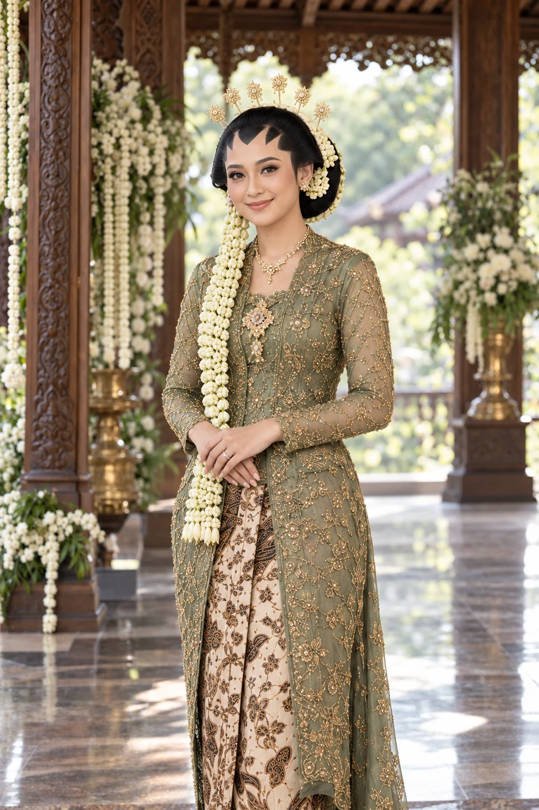
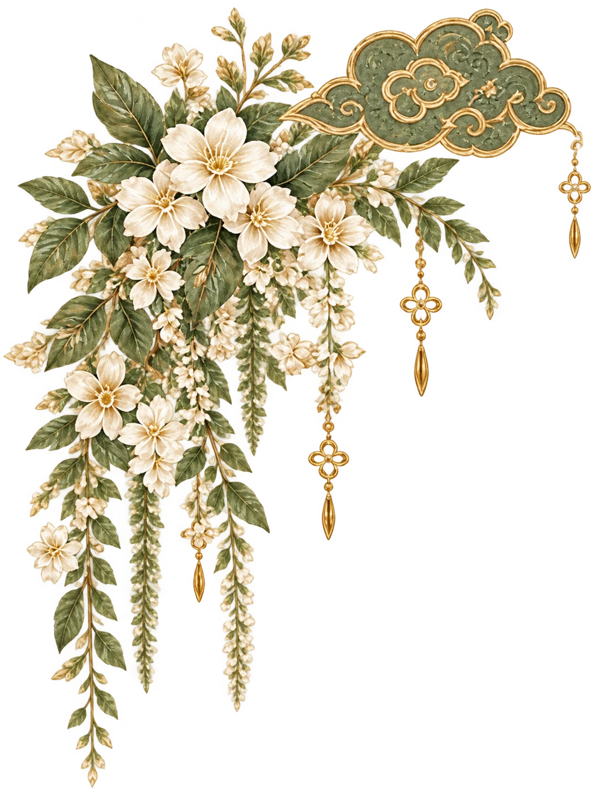
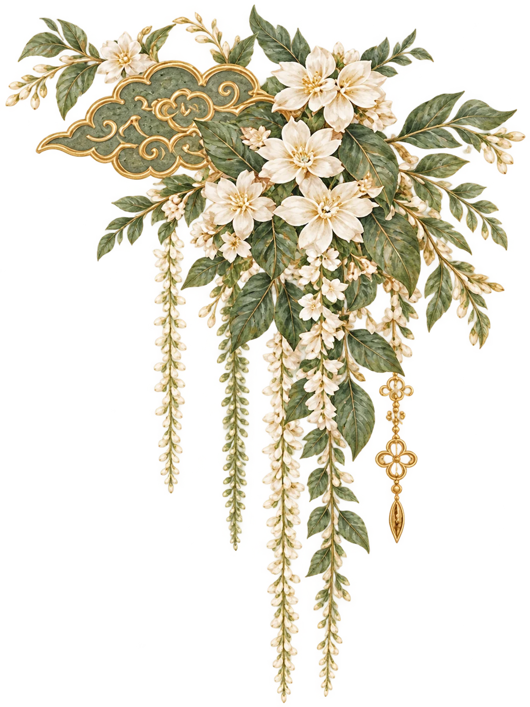
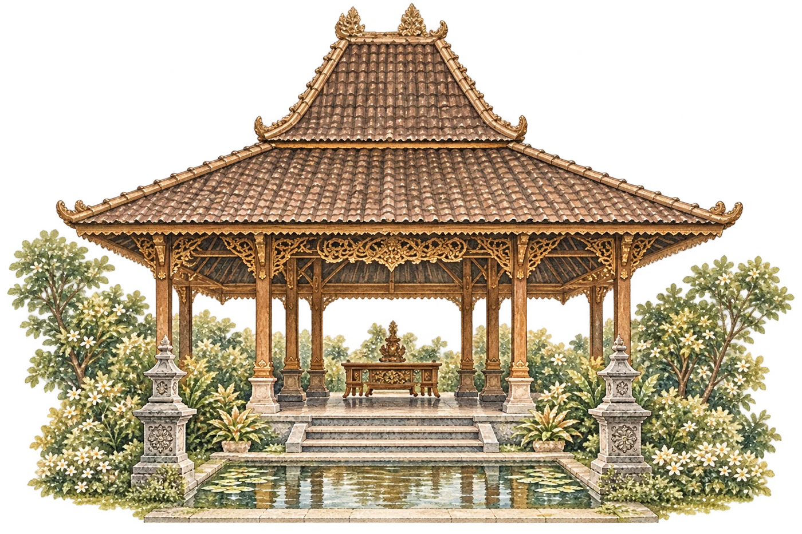
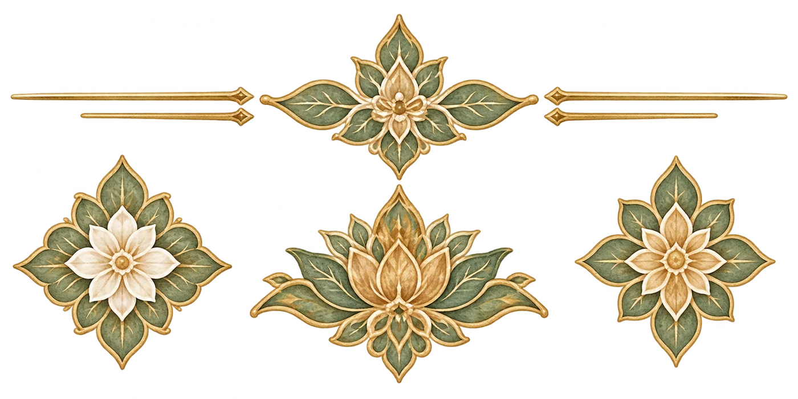
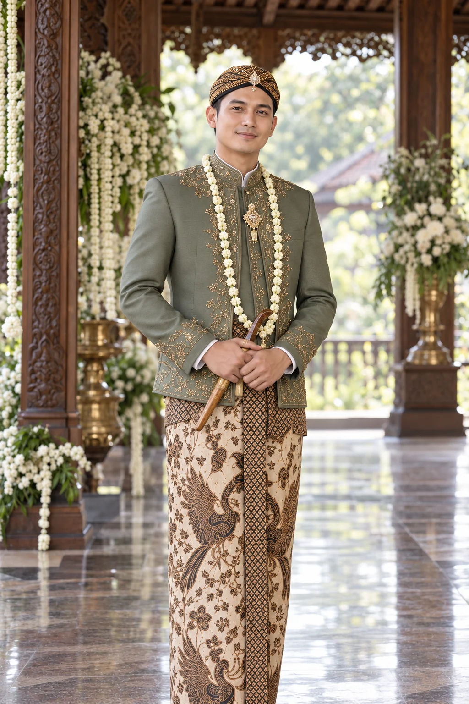

MEMPELAI WANITA
Sekar Ayuningtyas
Putri dari Bapak & Ibu Keluarga Mempelai Wanita


THE WEDDING OF
20 · 12 · 2026
Kepada Bapak/Ibu/Saudara/i
Tamu Undangan
Contoh undangan · detail acara ilustratif

THE WEDDING OF
Minggu, 20 Desember 2026
Dua hati. Satu perjalanan.
DENGAN RAHMAT & RESTU
Di antara banyaknya langkah, kami menemukan jalan untuk saling pulang. Dengan penuh syukur dan bahagia, kami mengundang Anda menjadi bagian dari hari istimewa kami.

SANG MEMPELAI

MEMPELAI WANITA
Putri dari Bapak & Ibu Keluarga Mempelai Wanita
&

MEMPELAI PRIA
Putra dari Bapak & Ibu Keluarga Mempelai Pria
OUR LITTLE STORY
Sebuah sapa sederhana membuka cerita. Dari percakapan kecil, tumbuh rasa yang membawa kami lebih dekat.
Kami belajar mendengar, memahami, dan saling menguatkan. Bersama, hari biasa menjadi begitu berarti.
Dengan restu keluarga, kami melangkah menuju janji untuk terus memilih satu sama lain.
Cerita ilustratif untuk pratinjau tema.
HARI YANG DINANTI
Minggu, 20 Desember 2026
01 / THE PROMISE
08.00 – 09.00 WIB
Pendopo Keluarga
Yogyakarta, Daerah Istimewa Yogyakarta
02 / THE CELEBRATION
11.00 – 14.00 WIB
Pendopo Keluarga
Yogyakarta, Daerah Istimewa Yogyakarta
Tanggal dan lokasi di atas adalah contoh.
OUR MOMENTS
Momen sederhana, kenangan yang akan selalu kami simpan.
Ketuk foto untuk melihat lebih dekat.
YOUR PRESENCE, OUR HAPPINESS
Kehadiran dan doa baik Anda adalah hadiah terindah bagi kami.
DOA ANDA